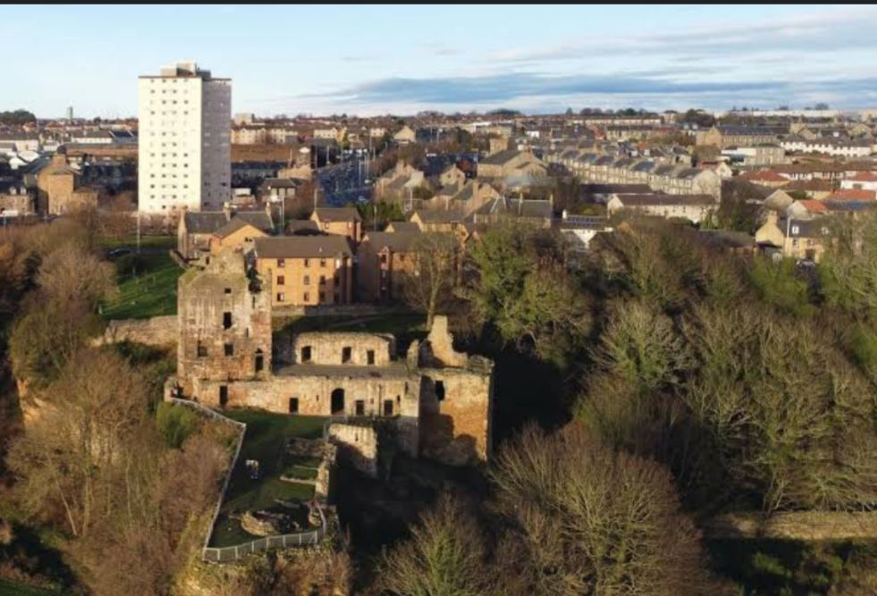

Adam Smith nasceu na cidade de Kirkcaldy, na Escócia, no dia 5 de junho de 1723. No entanto, sua data de nascimento exata é motivo de debate entre historiadores. Embora haja registros de seu batismo nessa data, não há evidências concretas de que ele tenha nascido precisamente nesse dia, tornando sua verdadeira data de nascimento incerta.
Mapa antigo de Kirkcaldy
Foto cidade de Kirkcaldy
Filho de Adam Smith, um advogado que faleceu alguns meses antes de seu nascimento, e de Margaret Douglas, pertencente a uma família de proprietários de terras, Smith foi criado por sua mãe, que desempenhou papel fundamental em sua formação.
As informações disponíveis sobre sua infância são escassas, mas uma das histórias mais conhecidas relata que, aos três anos de idade, ele teria sido sequestrado por um grupo de ciganos. A criança foi posteriormente abandonada pelos sequestradores ao perceberem que estavam sendo perseguidos pelas autoridades.
Na época, a cidade de Kirkcaldy possuía atividade econômica limitada, com a única exceção sendo uma fábrica de alfinetes. A observação do funcionamento dessa manufatura teve grande importância para o desenvolvimento de suas ideias sobre produção e divisão do trabalho — conceitos que mais tarde seriam centrais em sua obra.
Para saber mais informações, segue abaixo a localização exata no maps:
Estudou no Burgh School e, aos 14 anos, ingressou na Universidade de Glasgow para cursar Filosofia. Com uma bolsa, continuou seus estudos no Balliol College, da Universidade de Oxford. Retornando à Escócia, iniciou a carreira como professor, sendo nomeado em 1751 Professor de Lógica e, depois, de Filosofia Moral na Universidade de Glasgow. Entre 1764 e 1766, viajou pela Europa como tutor do duque de Buccleuch, entrando em contato com importantes pensadores iluministas. Em 1777, assumiu o cargo de inspetor de alfândega em Edimburgo, onde permaneceu até sua morte.
Smith nunca se casou e teve uma relação próxima com a mãe, com quem viveu até o falecimento dela. Era conhecido por ser introspectivo, distraído e reservado. Pouco se sabe sobre sua vida pessoal, pois ele ordenou que muitos de seus escritos privados fossem destruídos após sua morte.
Sua amizade com o filósofo escocês David Hume influenciou profundamente seu pensamento. Em 1759, Smith publicou "Teoria dos Sentimentos Morais", obra que analisa a moralidade e a empatia como bases do comportamento humano. Ele acreditava que, ao buscar seus próprios interesses, o indivíduo poderia, indiretamente, contribuir para o bem-estar da sociedade — ideia central para o pensamento econômico moderno.